一般スタッフ向け
全ての人が幸せになれる世の中に
スマートフォンのブラウザ（Safari / Chrome）を開いて、
以下のURLにアクセスしてください。
Safariで開く → 共有ボタン（□↑）→「ホーム画面に追加」をタップ
Chromeで開く → メニュー（⋮）→「ホーム画面に追加」をタップ
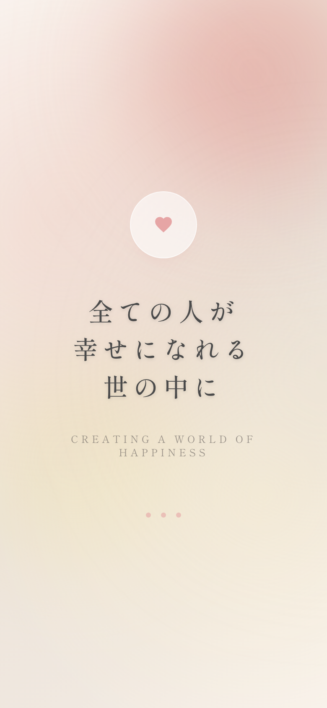
2026年4月4日現在、既にGoogleフォームにて入社手続きをお済ませの方は、アプリでの入社手続きは不要です。
ログインまでの流れ：
※ メールが届かない場合は、迷惑メールフォルダをご確認ください。
※ それでも届かない場合は管理者までご連絡ください。
（入社手続きの説明をスキップします）
ログイン後に表示される入社手続きメニューから、以下の順番で手続きを進めます。
入社手続きでは、基本情報・資格・マイナンバー・職歴・配偶者・扶養親族・通勤経路・口座情報・確認事項の7ステップを入力します。
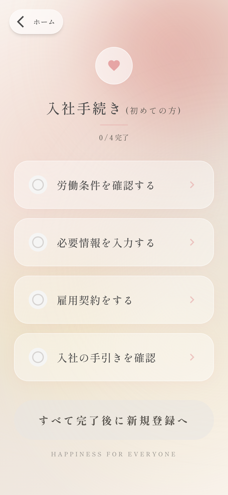
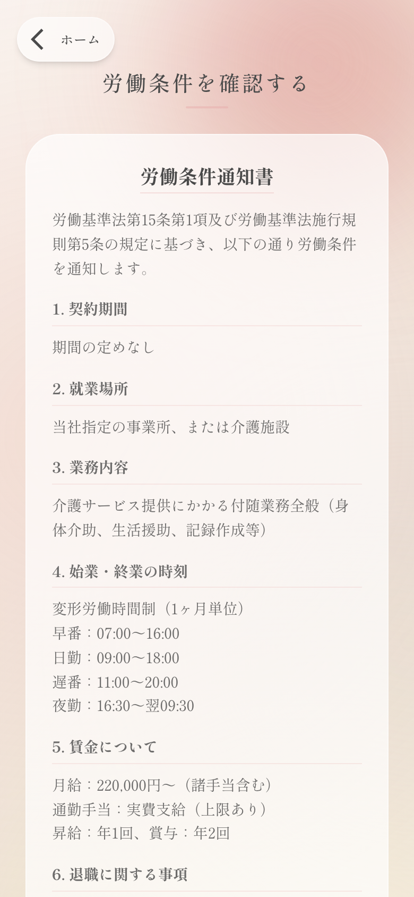
労働条件通知書
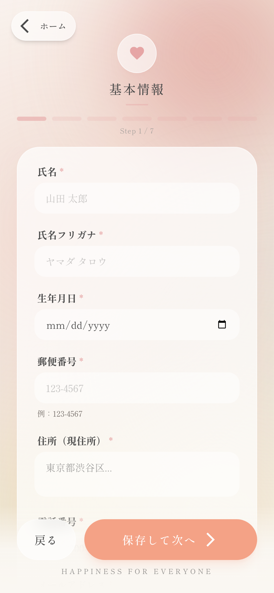
基本情報入力
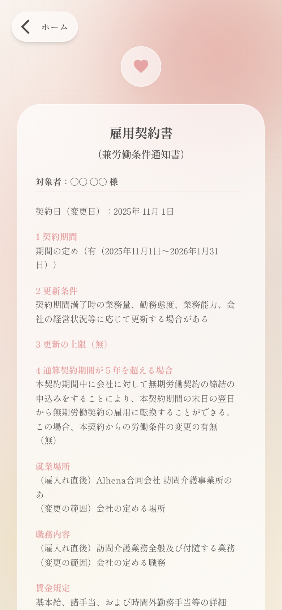
雇用契約書
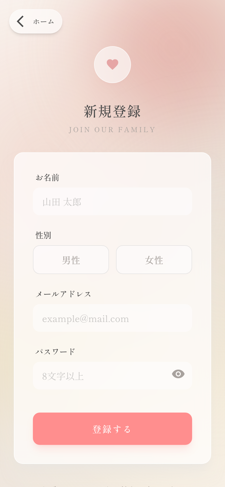
アカウント登録
「パスワードをお忘れですか？」をタップ → メールアドレスを入力して送信 → 登録メールアドレスに社員IDとパスワードが届きます
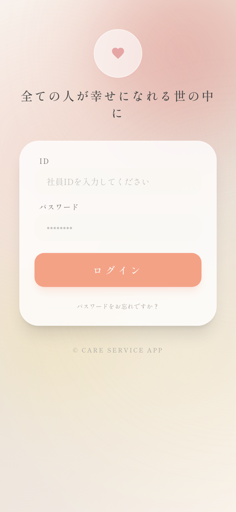
各シフトカードには出発到着日誌ボタンが表示されます。
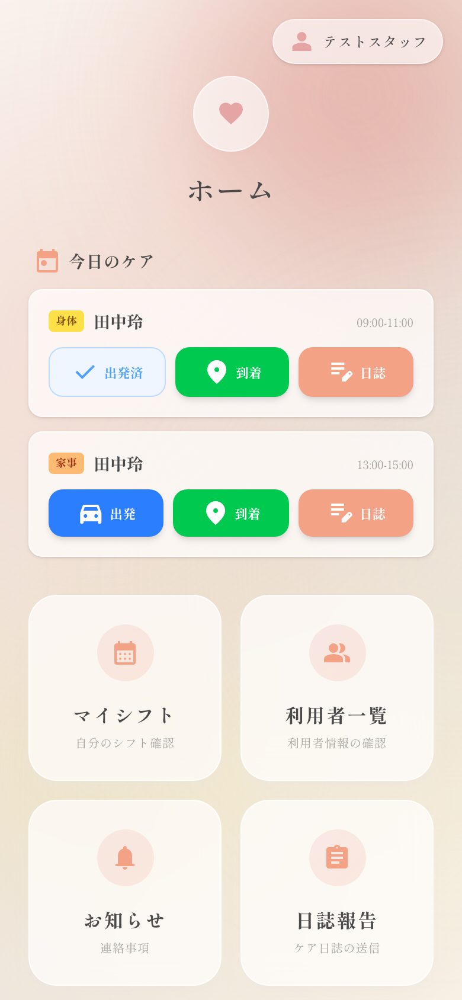
「出発済」や「到着済」の表示をもう一度タップすると、取り消し確認のダイアログが表示されます。「取り消す」を選べば元に戻せます。
出発前
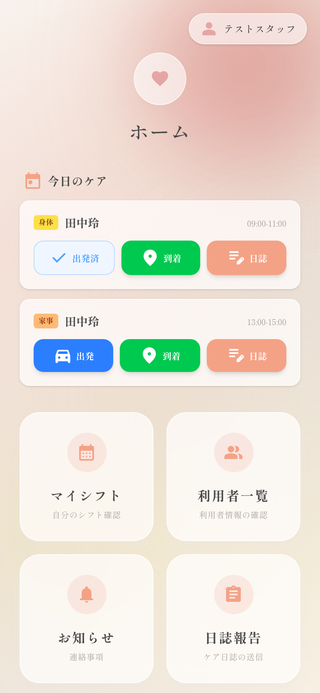
出発後
管理者が承認する前であれば、同じシフトカードの日誌ボタンから再編集が可能です。承認後は管理者にご連絡ください。
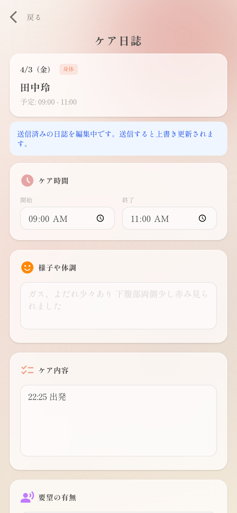
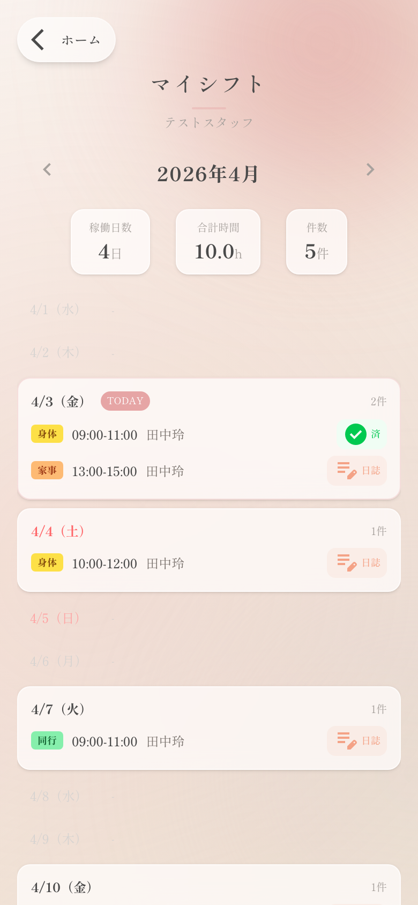
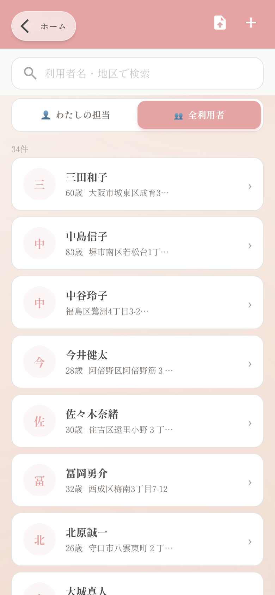
氏名・年齢・住所・緊急連絡先・介護度・障害区分・特記事項を確認できます
身体状況・生活状況・医療情報（既往歴・服薬）・コミュニケーション方法を確認できます
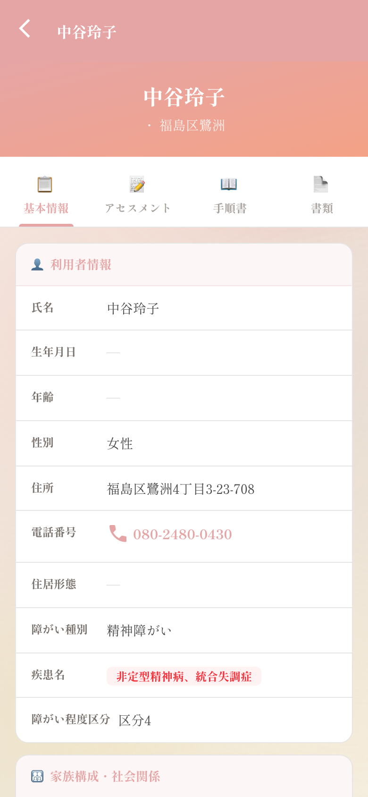
基本情報
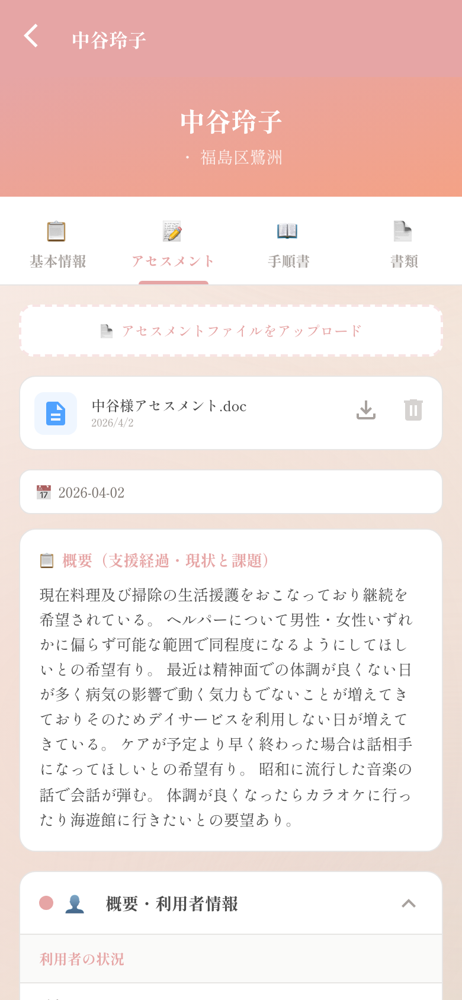
アセスメント
サービス種別ごとのケア手順が記載。ステータスバッジで状態がわかります：
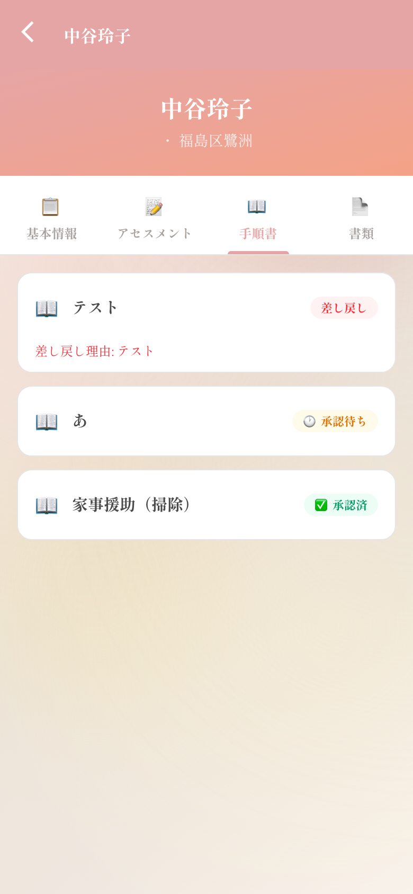
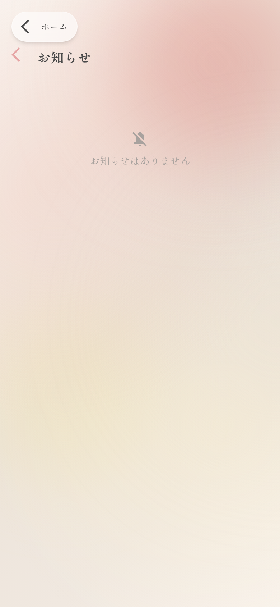
毎日の基本的な流れを確認しましょう
Alhena 合同会社
ケアサービスアプリ 操作マニュアル
お問い合わせは管理者または事務所までお願いいたします